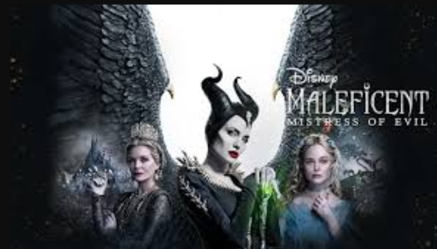

Maleficent არის თვითგამოცხადებული "ყველა ბოროტების ბედია" ჩარლზ პეროს ზღაპრის
"მძინარე მზეთუნახავის" ბოროტ ზღაპრულ ნათლიას პერსონაჟზე დაფუძნებული, ისევე როგორც ბოროტი, რომელიც ჩნდება ძმები გრიმების მოთხრობაში, Little Briar Rose. Maleficent თავდაპირველად ანიმაციური იყო მარკ დევისის მიერ.

მოგვიანებით, სტეფანი ღალატობს მალეფისენტს და იპარავს მის ფრთებს, რათა თქვას, რომ მოკლა იგი და გამეფებულიყო. ფრთების მტკივნეული დაკარგვის შემდეგ, მალეფისენტი განრისხდება მის ღალატზე და როცა მისი ოქროს გული ქვად იქცევა, ის ხდება ყველაზე ბოროტი ჯადოსნური არსება ამ ქვეყანაში.